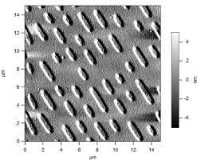
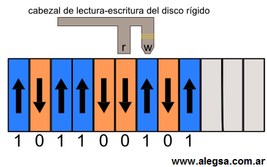

Introducción
La información digital es una parte fundamental de nuestra vida cotidiana, que ha revolucionado la forma en la que almacenamos, transmitimos y procesamos la información, su seguridad y versatilidad la convierten en una herramienta clave en el avance tecnológico y en el desarrollo de nuevas aplicaciones. Esta se expresa empleando ceros y unos (sistema binario)
Estos ceros y unos representan un estado real de materia, onda o energía. Por ejemplo, un CD, en el cual un láser lee la superficie que está marcada por distintas formas para representar el uno y el cero.
A continuación podemos ver una foto de un CD bajo un microscopio:

En otros casos el 0 es un voltaje eléctrico, y el 1 otro voltaje. Ambos pueden ser una frecuencia determinada, la idea es que se puedan distinguir entre dos estados posibles.
La sucesión de unos y ceros que constituye información digital (videos música, vídeos, imágenes, etc) está formada por el siguiente gráfico.
En el gráfico se observa un cabezal de lecto-escritura en discos rígidos. Al escribir (W) el cabezal polariza una pequeñísima porción del plato del disco duro, polarización que da dos estados posibles: arriba o abajo, lo cual significan 1 o 0 respectivamente.

La información digital permite el almacenamiento, transmisión y procesamiento de datos de grandes cantidades de forma eficiente. Gracias a esta tenemos la posibilidad de copiar y pegar información sin que pierda la calidad.
Además, esta es versátil, ya que puede ser convertida en diferentes formatos y manipulada de diversas formas. Esto permite el desarrollo de aplicaciones avanzadas en diferentes campos, como la medicina, el entretenimiento, la ingeniería, entre otros.